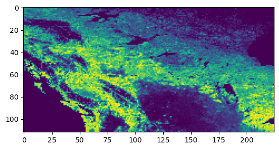

/Users/kyle/local/micromamba/envs/coguide-cog/lib/python3.11/site-packages/tqdm/auto.py:21: TqdmWarning: IProgress not found. Please update jupyter and ipywidgets. See https://ipywidgets.readthedocs.io/en/stable/user_install.html
from .autonotebook import tqdm as notebook_tqdm
earthaccess.login()
EARTHDATA_USERNAME and EARTHDATA_PASSWORD are not set in the current environment, try setting them or use a different strategy (netrc, interactive)
You're now authenticated with NASA Earthdata Login
Using token with expiration date: 10/24/2023
Using .netrc file for EDL
<earthaccess.auth.Auth at 0x10427d390>
Download a GeoTIFF from EarthData
Note: The whole point of is that we don’t download data. So in future examples, we will demonstrate how to access just subsets of data using COG and compare that with a GeoTIFF.
We can use rio_cogeo.cog_validate to check. It returns is_valid, errors and warnings.
cog_validate(veg_gtiff_filename)
The following warnings were found:
- The file is greater than 512xH or 512xW, it is recommended to include internal overviews
The following errors were found:
- The file is greater than 512xH or 512xW, but is not tiled
(False,
['The file is greater than 512xH or 512xW, but is not tiled'],
['The file is greater than 512xH or 512xW, it is recommended to include internal overviews'])
Return values:
is_valid is False: this is not a valid COG.
errors are 'The file is greater than 512xH or 512xW, but is not tiled'. To be a valid COG, the file should be tiled since it has a height and width both greater than 512.
warnings are 'The file is greater than 512xH or 512xW, it is recommended to include internal overviews'. It is recommended to provide overviews.
Converting a GeoTIFF to COG
We can use rio_cogeo.cog_create to convert a GeoTIFF into a Cloud Optimized GeoTIFF
They have the same dimensions which is what we expect, so that is good!
We can also print information about the GeoTIFF’s IFD (Internal File Directory). Only one item is returned because the GeoTIFF doesn’t have overviews. When we print the IFD info for the COG, which has overviews, we see more items returned.
Note for IFD Level 0, the regular GeoTIFF has a blocksize of (1, 7200) which implies each row of data is a separate block. So whenever reading in data, even if only a few columns are required, the full row must be read.
Overviews
Overviews are downsampled (aggregated) data intended for visualization.
The smallest size overview should match the tiling components’ fetch size, typically 256x256. Due to aspect ratio variation just aim to have at least one dimension at or slightly less than 256. > The COG driver in GDAL, or rio cogeo tools should do this.
There are many resampling algorithms for generating overviews. The best resampling algorithm depends on the range, type, and distribution of the data. When creating overviews several options should be compared before deciding which resampling method to apply.
GDAL >= 3.2 allows for the overview resampling method to be set directly.
veg_gtiff_rio.overviews(1)
[]
veg_cog_rio.overviews(1)
[2, 4, 8]
By displaying each overview, we can see how the dimensions get coarser for each overview level.
def show_overviews(geotiff): for overview in geotiff.overviews(1): out_height =int(geotiff.height // overview) out_width =int(geotiff.width // overview)print(f"out height: {out_height}")print(f"out width: {out_width}") # read first band of file and set shape of new output array window_size_height =round(out_height/8) window_size_width =round(out_width/8) image = veg_cog_rio.read(1, out_shape=(1, out_height, out_width))[ window_size_height:(window_size_height*2), window_size_width:(window_size_width*2), ] show(image)show_overviews(veg_cog_rio)
out height: 1800
out width: 3600
out height: 900
out width: 1800
out height: 450
out width: 900

We can generate more and different overviews, through different tilesizes and resampling.